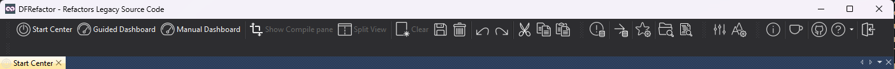

Menus and Toolbars
The program window has a menu bar at the top and two toolbars below it. All commands are available in the menus. The toolbars contain the commands that are used most often. Point to a toolbar button or a menu command to see a short description of it.

The menus
File
|
Command |
Shortcut |
What it does |
|
Open Workspace... |
Ctrl+W |
Select the workspace (.sws file) to work on. |
|
Open a Source File... |
Ctrl+O |
Select a single source file to refactor. |
|
Clear |
|
Close the current workspace or file, and return to the Start Center. |
|
Save |
Ctrl+S |
Save the changes made in the editor. |
|
Exit |
Alt+F4 |
Close the program. |
Edit
These commands work on the source file that is open in the editor. They are available only when the editor contains a file.
|
Command |
Shortcut |
What it does |
|
Undo / Redo |
Ctrl+Z / Ctrl+Y |
Undo or redo the last change made in the editor. |
|
Cut, Copy, Paste, Delete |
|
The standard clipboard commands. |
|
Find... |
Ctrl+F |
Search for text in the editor. |
|
Find Next / Find Previous |
F3 / Shift+F3 |
Go to the next or the previous match of the search text. |
|
Replace... |
Ctrl+Alt+F3 |
Search for text in the editor and replace it. |
|
Go to Line... |
Ctrl+G |
Go to a specific line number in the editor. |
|
Go to Definition |
F12 |
Go to the place where the word at the cursor is declared. |
View
|
Command |
What it does |
|
Start Center |
Show the Start Center, where you open a workspace and choose between the guided and the manual way of working. |
|
Guided Dashboard |
Show the Guided Dashboard, which takes you through the work one step at a time. |
|
Manual Dashboard |
Show the Manual Dashboard, where you select the folders and the functions yourself. |
|
Editor |
Show the editor with the current source file. |
|
Compile Pane |
Show or hide the Compile pane, which contains Test Compile, Compiler Output and the Modernization Analyzer. |
|
Split View |
Show the dashboard on the left and the other views on the right. Choose the command again to return to a single view. |
Workspace
|
Command |
Shortcut |
What it does |
|
Libraries... |
Alt+B |
Show the libraries that the workspace uses and their versions, and add or remove a library. |
|
Undo Refactoring... |
Alt+U |
Restore source files from the backups that were made before each refactoring run. |
|
Compare with the Backups... |
Alt+M |
Compare the source files with their backups in an external compare program. The program is selected in Program Settings. |
|
Open the Containing Folder |
|
Open the workspace folder in Windows Explorer, with the current file selected. |
Tools
|
Command |
Shortcut |
What it does |
|
Analyze Source Rules... |
|
Select which obsolete symbols Analyze Source searches for. |
|
Logs > Error Log... |
|
Show the error log of the refactoring engine. Available only when there are errors. |
|
Logs > The Refactoring Log... |
Alt+L |
Show the log of the refactoring runs. The log is stored in the workspace's backup folder. |
|
Logs > Other Log Files... |
|
Show the log files written by the report functions. They are stored in the workspace's backup folder. |
|
Export to a Batch-mode INI File... |
|
Save the current refactoring settings to an ini-file, so that the refactoring can be run without user interaction. PowerShell scripts that start such a run are saved at the same time. See Command-Line Usage. |
|
StarZen's Source Explorer |
Ctrl+E |
Start StarZen's DataFlex Source Code Explorer for the workspace. It is a separate download; enter its path in Program Settings first. |
|
Settings... |
Ctrl+T |
Open Program Settings: backups, external tools, theme and engine options. |
|
Compiler Setup... |
|
Select the DataFlex compiler that is used to compile the workspace's programs. |
|
Editor Settings... |
Alt+D |
Open Editor Settings: the editor's colours, font, keywords and indent size. |
Help
|
Command |
What it does |
|
Local HTML Help |
Open this help as installed with the program. You can also press F1. |
|
Online HTML Help |
Open this help on the web. The online version may be more recent than the installed one. |
|
The Source Code on GitHub |
Open DFRefactor's source code repository on GitHub. |
|
Suggest a Feature or Report a Bug... |
Open DFRefactor's GitHub page, where you can suggest a feature or report a bug. |
|
Buy Me a Coffee (Ko-fi) |
Support the project with a donation. |
|
About |
Show the program's version and credits. |
The toolbars
The main toolbar contains these buttons: Start Center, Guided Dashboard, Manual Dashboard, Editor, Show Compile pane, Split View, Clear, the editor commands Save (Alt+S), Undo and Redo, and StarZen's Source Explorer.
A second, smaller toolbar contains About, Ko-fi, Suggest a feature or report a bug, Help (F1) and Exit (Alt+F4).
All other commands, such as Libraries, Undo Refactoring, the logs, the export and the settings, are available from the menus.
A refactoring run can be undone in two ways: with Revert on the dashboards, or with Workspace > Undo Refactoring.... Both restore the files from the backup folder. See How to use the Program.